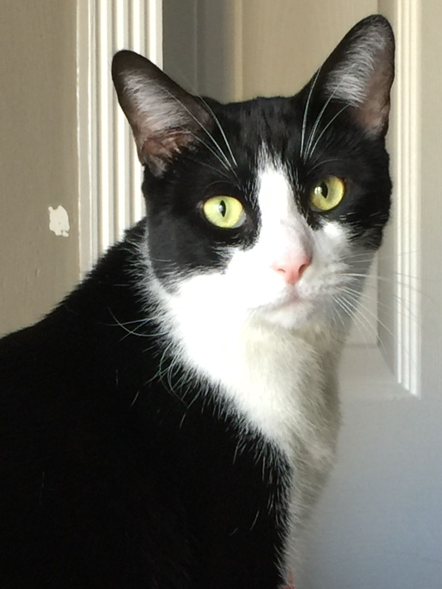

GATOS TUXEDOS
¿Cómo es un gato tuxedo?

El gato tuxedo no es una raza específica, sino más bien una descripción de un patrón de pelaje.
Así, el término "tuxedo" se utiliza para referirse a gatos que tienen un patrón bicolor con una
apariencia que se asemeja a un esmoquin, con un pelaje predominantemente negro con áreas
blancas en la cara, el pecho, el vientre, las patas y a veces en la punta de la cola.
Si bien este patrón se ha asociado tradicionalmente con el aspecto elegante de un
caballero, también está presente en las hembras.